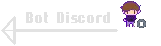
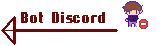

Programme codee en C# en fonctionnel sur Visual Studio Code
De l'Or A l'Ecailles !
Dans ce jeu de jarre il est possible de jouer a plusieurs
niveau allant du plus dur au plus complique dont les
probabilite de remporte une manche est donne dans les regles
Quel Jarre ?
Dans une salle, il y a 5 Jarres, la quel ouvrir ?
le joueur a disposition un certain nombre de jarres et
doit designe la quel il veut ouvrir en tapant un chiffre
entre 1 et le nombre total de jarres, il au un compteur de
clés toujours avec lui, si celui tombe a 0 alors il repart
sans rien, a l'inverse a 3cle, il gagne (pour les 3 premier
mode)
Toujours dans l'Exces !
Dans ce jeu de Jarre, il existe un dernier mode, c'est un
mode personnalise dans le quel il est possible de choisir
tout ses parametre (nombre de Jarre, de serpend par Jarre
et de Cles pour gagne)
Conclusion
Ce jeu de jarre fait a ete un grand avancement pour moi, je l'ai commence en Novembre 2021, apres avoir commence une formation en Autodidactes en C#, apres avoir appris les base, j'ai decide de faire une pause et de faire un programme sans aide pour assimile les base du C#, j'ai aussi du me servir de la documentation disponible pour utilise de nouvelle choses, un programme tres enrichissant pour moi. Autrement, c'était un programme que j'avais deja fait en Python en Terminal, j'ai donc appris aussi beaucoup de mes erreurs sur ma facon de code.
 